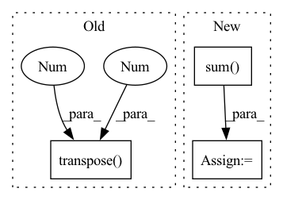

Pattern ID :30920
Before Change
mixture = mixture.transpose(2, 1, 0)
estimated_amplitude = estimated_amplitude.transpose(3, 2, 1, 0)
estimated_sources = norbert.wiener(estimated_amplitude, mixture, eps=eps)
estimated_sources = estimated_sources.transpose( 3, 2 , 1, 0 )
estimated_sources = torch.from_numpy(estimated_sources).to(device, dtype)
return estimated_sourcesAfter Change
assert estimated_sources_amplitude.dim() == 4, "estimated_sources_amplitude.dim() is expected 4, but given {}.".format(estimated_amplitude.dim())
ratio = estimated_sources_amplitude / estimated_sources_amplitude.sum(dim=0)
estimated_sources = ratio * mixture
norm = max(1, torch.abs(mixture).max() / 10)
mixture, estimated_sources = mixture / norm, estimated_sources / normIn pattern: SUPERPATTERN
Frequency: 3
Non-data size: 3
Instances Fragment ID: 91006140
Project Name: tky823/dnn-based_source_separation
Commit Name: d45a578a242ecb277ef7bdc5c9d6f75c4ad13521
Time: 2021-08-20
Author: 40362510+tky823@users.noreply.github.com
File Name: egs/musdb18/d3net/src/adhoc_driver.py
M Class Name: AnonimousClass
N Class Name: AnonimousClass
M Method Name: apply_multichannel_wiener_filter(5)
N Method Name: apply_multichannel_wiener_filter(4)
M Parent Class:
N Parent Class:
M File Name: egs/musdb18/d3net/src/adhoc_driver.py
N File Name: egs/musdb18/d3net/src/adhoc_driver.py
M Start Line: 398
M End Line: 414
N Start Line: 385
N End Line: 403
Before Change
seq_length = seg.size(1)
device = seg.device
emb = self.pe[: seq_length].transpose(0 , 1 )
return emb.to(device)
After Change
else:
batch_size, seq_length = src.size()
device = src.device
no_pad_num = (src != 0).sum(dim=-1)
emb = torch.zeros(batch_size, seq_length, self.emb_size)
for i in range(batch_size):
emb[i, :no_pad_num[i], :] = self.emb[2: no_pad_num[i]+2] Fragment ID: 91006168
Project Name: tencent/tencentpretrain
Commit Name: 2bc6d47065d7a5e6907d449cf5114248000274fe
Time: 2022-12-16
Author: 40569026+JINGZIjingzi@users.noreply.github.com
File Name: tencentpretrain/embeddings/sinusoidalpos_embedding.py
M Class Name: SinusoidalposEmbedding
N Class Name: SinusoidalposEmbedding
M Method Name: forward(3)
N Method Name: forward(3)
M Parent Class: nn.Module
N Parent Class: nn.Module
M File Name: tencentpretrain/embeddings/sinusoidalpos_embedding.py
N File Name: tencentpretrain/embeddings/sinusoidalpos_embedding.py
M Start Line: 45
M End Line: 47
N Start Line: 55
N End Line: 68
Before Change
// tgt, src: B x N x 2
B, N, _ = pixel_coords.size()
R = R_tgt_src_pred[:, :2, :2] // B x 2 x 2
t = t_tgt_src_pred[:, :2, 3].unsqueeze(-1).transpose(2 , 1 ) .expand(B, 2, N) // B x 2 x N
tgt_pred = (torch.bmm(R, src.transpose(2, 1)) + t).transpose(2, 1)
dict_loss = {}
return torch.nn.L1Loss(tgt, tgt_pred), dict_lossAfter Change
t = t_tgt_src_pred[:, :2].expand(B, 2, N) // B x 2 x N
tgt_pred = (torch.bmm(R, src.transpose(2, 1)) + t).transpose(2, 1)
error = torch.abs(tgt - tgt_pred)
loss = torch.sum( error) / (2 * N)
dict_loss = {}
return loss, dict_loss
Fragment ID: 91006166
Project Name: utiasasrl/hero_radar_odometry
Commit Name: 749b439a6e0060f5d16876fd6e82fc2e6dcc713a
Time: 2021-01-08
Author: keenburn2004@gmail.com
File Name: utils/utils.py
M Class Name: AnonimousClass
N Class Name: AnonimousClass
M Method Name: pointmatch_loss(5)
N Method Name: pointmatch_loss(5)
M Parent Class:
N Parent Class:
M File Name: utils/utils.py
N File Name: utils/utils.py
M Start Line: 19
M End Line: 22
N Start Line: 17
N End Line: 25